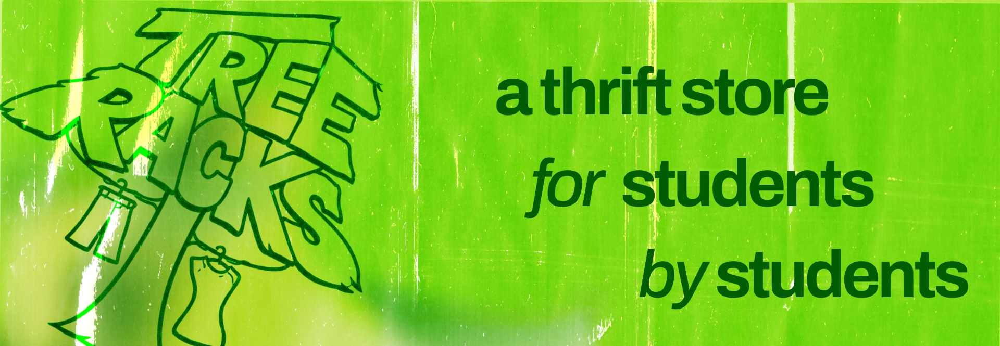
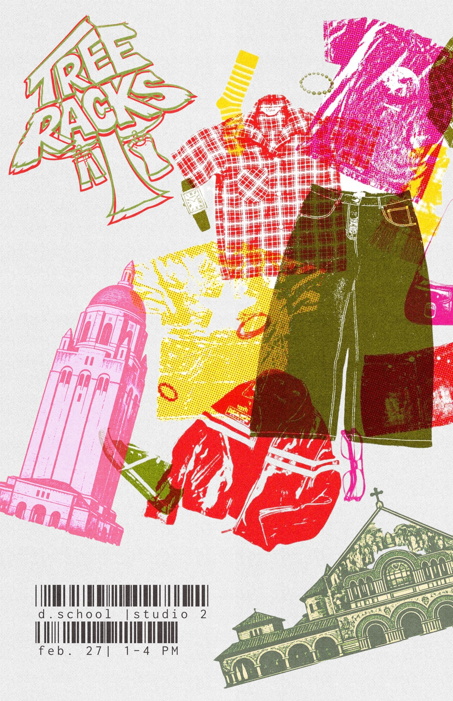

TreeRacks
A student-run circular fashion initiative keeping clothes on the Farm and out of the trash.
Every June, hundreds of pounds of clothing end up in dumpsters and donation bins across Stanford as students move out for the summer. Some items make it to local nonprofits. Most do not. Perfectly wearable clothes still get thrown away because there is no easy system for keeping them in circulation.
Students already want secondhand options. The problem is access. Affordable thrift stores are far from campus, and most nearby retail is priced out of reach for students.
TreeRacks started as an attempt to close that gap.



Grand opening at the Stanford d.school, February 2026
In February 2026, TreeRacks hosted its grand opening pop-up at Stanford's d.school. In just three hours, over 250 students came through the doors, raised more than $1,000, and kept 350+ pounds of textiles out of landfills.
The response was immediate. Nearly every attendee surveyed supported the idea of a permanent thrift space on campus.
Schedule a Pickup
I built a web app that lets students, alumni, and Bay Area residents schedule clothing pickups directly. The system helps our team coordinate donations across campus and the surrounding area, making donation easier than throwing clothes away.
From donation request to pickup claim — the full flow.
Priced Thoughtfully
Every item is priced to move. Most pieces sell for 10 to 30% of retail. We use a consistent methodology so prices feel fair, not arbitrary.
Nothing Goes to Waste
Unsold clothes go to approved local nonprofit partners like The Opportunity Center in Palo Alto and Goodwill. Textiles too worn to resell are sent to on-campus partners like the Textile Makerspace and GSE Makery.
Every item has a next life.